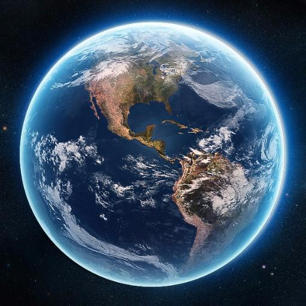

| 
| This article is about the planet. For other uses, see Earth (disambiguation) and Planet Earth (disambiguation). "Third planet" redirects here. For other systems of numbering planets, see Planet § History. For the song, see 3rd Planet (song). Earth 🜨 Photograph of Earth, taken by the Apollo 17 mission. The Arabian peninsula, Africa and Madagascar lie in the lower half of the disc, whereas Antarctica is at the top. A photograph of Earth taken by the crew of Apollo 17 in 1972. A processed version became widely known as The Blue Marble.[1][2] Designations Alternative names Gaia, Terra, Tellus, the world, the globe Adjectives Earthly, terrestrial, terran, tellurian Orbital characteristics Epoch J2000[n 1] Aphelion 152100000 km (94500000 mi)[n 2] Perihelion 147095000 km (91401000 mi)[n 2] Semi-major axis 149598023 km (92955902 mi)[3] Eccentricity 0.0167086[3] Orbital period (sidereal) 365.256363004 d[4] (1.00001742096 aj) Average orbital speed 29.78 km/s[5] (107200 km/h; 66600 mph) Mean anomaly 358.617° Inclination 7.155° to the Sun's equator; 1.57869°[6] to invariable plane; 0.00005° to J2000 ecliptic Longitude of ascending node −11.26064°[5] to J2000 ecliptic Time of perihelion 2023-Jan-04[7] Argument of perihelion 114.20783°[5] Satellites 1 natural satellite: the Moon 5 quasi-satellites >4 500 operational artificial satellites[8] >18 000 tracked space debris[n 3] Physical characteristics Mean radius 6371.0 km (3958.8 mi)[9] Equatorial radius 6378.137 km (3963.191 mi)[10][11] Polar radius 6356.752 km (3949.903 mi)[12] Flattening 1/298.257222101 (ETRS89)[13] Circumference 40075.017 km equatorial (24901.461 mi)[11] 40007.86 km meridional (24859.73 mi)[14][n 4] Surface area 510072000 km2 (196940000 sq mi)[15][n 5] 148940000 km2 land (57510000 sq mi) 361132000 km2 ocean (139434000 sq mi) Volume 1.08321×1012 km3 (2.59876×1011 cu mi)[5] Mass 5.97237×1024 kg (1.31668×1025 lb)[16] (3.0×10−6 M☉) Mean density 5.514 g/cm3 (0.1992 lb/cu in)[5] Surface gravity 9.80665 m/s2 (1 g; 32.1740 ft/s2)[17] Moment of inertia factor 0.3307[18] Escape velocity 11.186 km/s[5] (40270 km/h; 25020 mph) Synodic rotation period 1.0 d (24h 00m 00s) Sidereal rotation period 0.99726968 d[19] (23h 56m 4.100s) Equatorial rotation velocity 0.4651 km/s[20] (1674.4 km/h; 1040.4 mph) Axial tilt 23.4392811°[4] Albedo 0.367 geometric[5] 0.306 Bond[5] Surface temp. min mean max Celsius −89.2 °C[21] 14 °C (1961–90)[22] 56.7 °C[23] Fahrenheit −128.5 °F 57 °F (1961–90) 134.0 °F Surface equivalent dose rate 0.274 μSv/h[24] Atmosphere Surface pressure 101.325 kPa (at MSL) Composition by volume 78.08% nitrogen (N2; dry air)[5] 20.95% oxygen (O2) ~ 1% water vapor (climate variable) 0.9340% argon 0.0413% carbon dioxide[25] 0.00182% neon[5] 0.00052% helium 0.00019% methane 0.00011% krypton 0.00006% hydrogen Earth is the third planet from the Sun and the only astronomical object known to harbor life. While large volumes of water can be found throughout the Solar System, only Earth sustains liquid surface water. About 71% of Earth's surface is made up of the ocean, dwarfing Earth's polar ice, lakes, and rivers. The remaining 29% of Earth's surface is land, consisting of continents and islands. Earth's surface layer is formed of several slowly moving tectonic plates, interacting to produce mountain ranges, volcanoes, and earthquakes. Earth's liquid outer core generates the magnetic field that shapes Earth's magnetosphere, deflecting destructive solar winds. Earth's atmosphere consists mostly of nitrogen and oxygen. More solar energy is received by tropical regions than polar regions and is redistributed by atmospheric and ocean circulation. Water vapor is widely present in the atmosphere and forms clouds that cover most of the planet. Greenhouse gases in the atmosphere like carbon dioxide (CO2) trap a part of the energy from the Sun close to the surface. A region's climate is governed by latitude, but also by elevation and proximity to moderating oceans. Severe weather, such as tropical cyclones, thunderstorms, and heatwaves, occurs in most areas and greatly impacts life. Earth is an ellipsoid with a circumference of about 40,000 km. It is the densest planet in the Solar System. Of the four rocky planets, it is the largest and most massive. Earth is about eight light minutes away from the Sun and orbits it, taking a year (about 365.25 days) to complete one revolution. Earth rotates around its own axis in just less than a day (in about 23 hours and 56 minutes). Earth's axis of rotation is tilted with respect to the perpendicular to its orbital plane around the Sun, producing seasons. Earth is orbited by one permanent natural satellite, the Moon, which orbits Earth at 380,000 km (1.3 light seconds) and is roughly a quarter as wide as Earth. The Moon always faces the Earth with the same side through tidal locking and causes tides, stabilizes Earth's axis, and gradually slows its rotation. Earth formed over 4.5 billion years ago. During the first billion years of Earth's history, the ocean formed and then life developed within it. Life spread globally and began to affect Earth's atmosphere and surface, leading to Earth's Great Oxidation Event two billion years ago. Humans emerged 300,000 years ago, and have reached a population of almost 8 billion today. Humans depend on Earth's biosphere and natural resources for their survival, but have increasingly impacted Earth's environment. Today, humanity's impact on Earth's climate, soils, waters, and ecosystems is unsustainable, threatening people's lives and causing widespread extinction of other life. take me to wikipedia website |
|---|
In its most general sense, the term "world" refers to the totality of entities, to the whole of reality or to everything that is.[1] The nature of the world has been conceptualized differently in different fields. Some conceptions see the world as unique while others talk of a "plurality of worlds". Some treat the world as one simple object while others analyze the world as a complex made up of many parts. In scientific cosmology the world or universe is commonly defined as "[t]he totality of all space and time; all that is, has been, and will be". Theories of modality, on the other hand, talk of possible worlds as complete and consistent ways how things could have been. Phenomenology, starting from the horizon of co-given objects present in the periphery of every experience, defines the world as the biggest horizon or the "horizon of all horizons". In philosophy of mind, the world is commonly contrasted with the mind as that which is represented by the mind. Theology conceptualizes the world in relation to God, for example, as God's creation, as identical to God or as the two being interdependent. In religions, there is often a tendency to downgrade the material or sensory world in favor of a spiritual world to be sought through religious practice. A comprehensive representation of the world and our place in it, as is commonly found in religions, is known as a worldview. Cosmogony is the field that studies the origin or creation of the world while eschatology refers to the science or doctrine of the last things or of the end of the world...take me to wikipedia website
to learn more about the world and our planet , environment : take me to nationalgeographic website